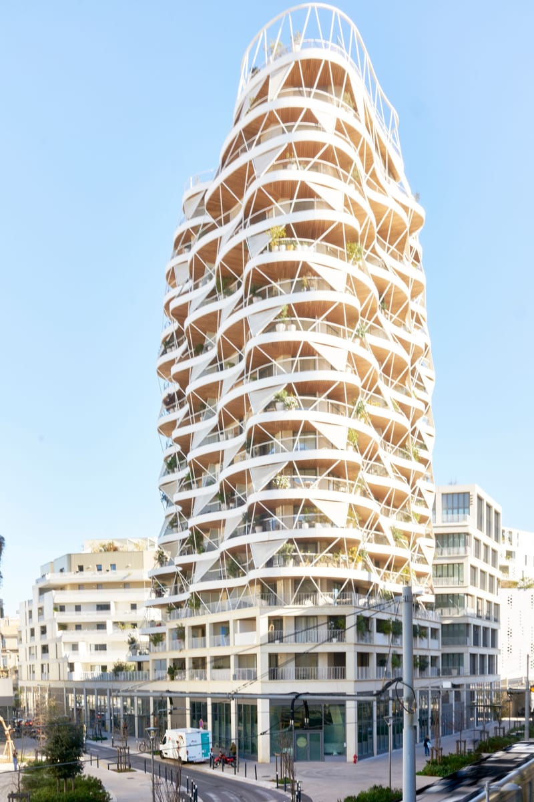
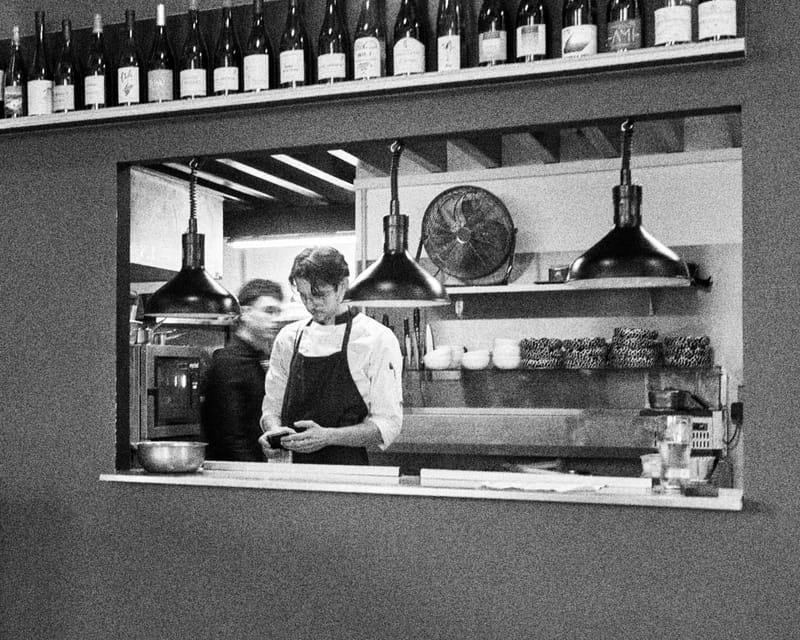
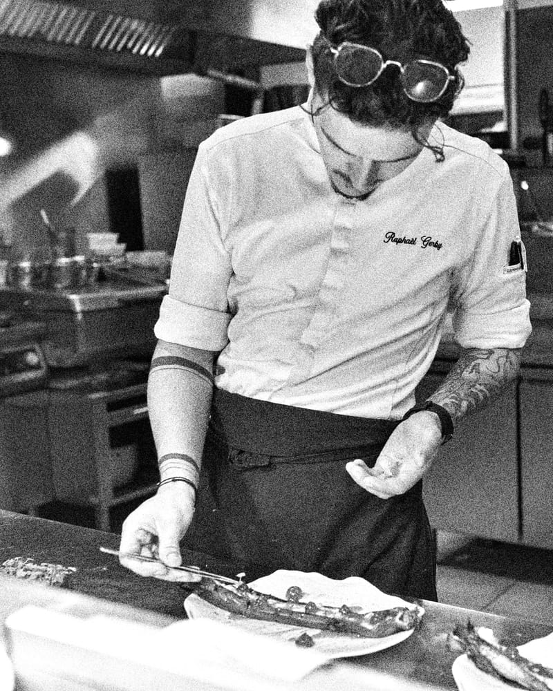
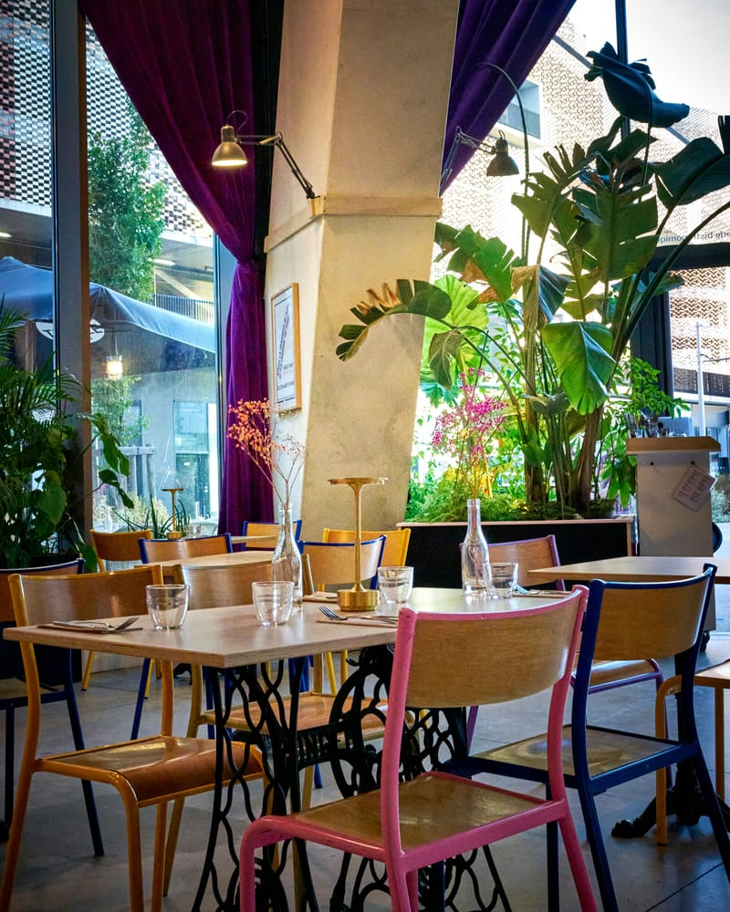
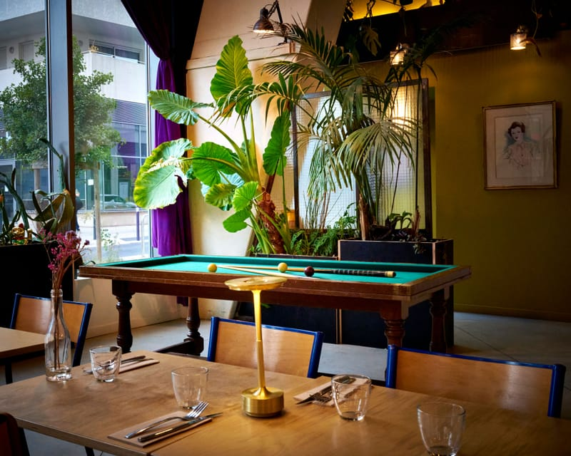
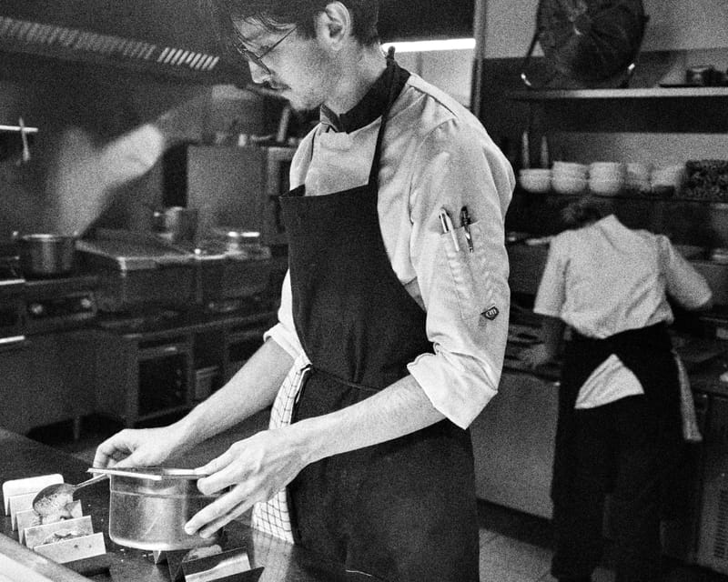
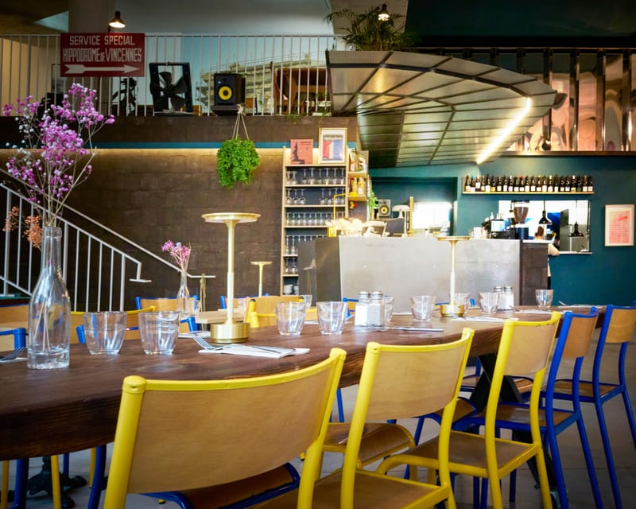

MUSE, brasserie bistronomique à Montpellier
brasserie bistronomique
« Un lieu de vie qui nous inspire pour manger autrement »

01Présentation
Brasserie bistronomique à Montpellier
Installé au rez-de-chaussée de l’emblématique tour résidentielle Higher Roch, au cœur du quartier Nouveau Saint-Roch et à quelques pas de la gare Montpellier Saint-Roch, MUSE est une brasserie bistronomique pensée comme un véritable lieu de vie.
Du petit-déjeuner au dîner, MUSE évolue au fil de la journée : café le matin, table bistronomique le midi, espace de travail et de rendez-vous en journée, puis bar et restaurant convivial en soirée.
Plus qu’un restaurant, MUSE est un lieu vivant où se rencontrent cuisine, art, musique et convivialité.
Muse
Dans la mythologie, les Muses incarnent les arts et l’inspiration. Au fil des siècles, le mot « muse » est devenu synonyme de source d’inspiration, qu’elle soit une personne, un lieu, une émotion ou une rencontre.
C’est autour de cette idée qu’est né MUSE : créer un lieu capable d’inspirer, de provoquer les rencontres et de donner envie de rester.
Un restaurant peut être plus qu’une table. Il peut devenir un lieu où l’on mange, où l’on échange, où l’on travaille, où l’on écoute de la musique, où l’on vient lire un livre et où l’on revient simplement parce que l’on s’y sent bien.

Le concept
Peut-on encore imaginer des utopies culinaires ? Des lieux où la cuisine, la créativité et la joie de vivre se rencontrent ?
Chez MUSE, le concept part d’une idée simple : revenir à l’essentiel de la culture française — bien manger et partager.
Se retrouver entre amis, en famille ou entre collègues, faire des rencontres autour d’une table et, forcément, parler de ce que l’on mangera le lendemain.
MUSE s’inspire également de l’esprit des « folies montpelliéraines », ces maisons de plaisance imaginées comme des lieux de liberté, de réception et d’évasion.
Dans cet esprit, la scénographie accompagne la cuisine : la cuisine devient la scène, le chef et sa brigade les interprètes, et le produit reste au centre de l’assiette.
Notre territoire occitan et méditerranéen offre une richesse exceptionnelle de produits, de producteurs, de vins et de savoir-faire. MUSE souhaite les mettre en valeur à travers une cuisine contemporaine, accessible et en mouvement.
Le restaurant
La cuisine et la carte
Sous la direction du chef Raphaël Gerby, MUSE propose une cuisine de saison d’inspiration résolument méditerranéenne, élaborée à partir de produits frais avec une attention particulière portée aux circuits courts et aux producteurs.

02Infos pratiques
Infos pratiques
Adresse
Rez-de-chaussée de Higher Roch
123 rue Alexandra David-Néel
34000 Montpellier
À quelques pas de la gare Montpellier Saint-Roch.
Horaires
Ouvert 7 jours sur 7
- Le matinCafé & petit-déjeuner
- 7h – 10h30
- Le midiTable bistronomique
- 12h – 14h
- En journéeTravail & rendez-vous
- Service continu
- Le soirBar & restaurant
- 19h – 22h
Réservation
Réservations possibles directement auprès du restaurant ou en ligne.
Suivre MUSE
GASTÉRÉA
DIXIÈME MUSE
ELLE PRÉSIDE AUX
JOUISSANCES
DU GOÛT
Physiologie du goût (1825)
03La carte
La carte
Le midi
12h – 14hLe déjeuner est pensé dans un esprit de brasserie bistronomique : une cuisine soignée, créative et accessible.
L’ardoise évolue très régulièrement au gré des saisons et des arrivages. Une suggestion vient également compléter la carte chaque semaine afin de laisser une place à l’inspiration du chef et aux produits du moment.


Le soir
19h – 22hÀ la tombée de la journée, MUSE change de rythme.
La carte laisse davantage de place à la convivialité, avec des assiettes à partager et une cuisine pensée pour accompagner un verre, un dîner ou une soirée entre amis.
La carte évolue régulièrement afin de suivre les saisons et de conserver cette liberté créative qui fait partie de l’identité de MUSE.


Le bar
Du matin au soirLe bar occupe une place centrale dans la vie de MUSE.
Dès le matin, il accompagne les premiers cafés et les petits-déjeuners. Au fil de la journée, il devient un lieu de rendez-vous, avant de prendre une dimension plus festive en fin de journée et en soirée.
La carte fait la part belle aux cocktails, vins soigneusement sélectionnés et boissons travaillées, avec une volonté de créer des accords entre le verre et l’assiette.
On vient au bar de MUSE pour prendre un verre après le travail, partager quelques assiettes, commencer ou prolonger un dîner, retrouver des amis ou simplement profiter de l’atmosphère du lieu.
Des afterworks, soirées musicales et DJ sets viennent régulièrement rythmer la vie de MUSE.


Les vins
Au verre & à la bouteilleAu verre, rouges, blancs, rosés, vin orange et champagnes.
Languedoc · Vallée du Rhône · Bourgogne · Loire · Roussillon · Espagne · Champagne


04Le lieu
Le lieu
MUSE s’étend sur environ 230 m² et a été imaginé comme un espace vivant, chaleureux et singulier.
Le décor, conçu notamment avec le scénographe Christophe Goutes, s’articule autour d’une cuisine ouverte, véritable cœur du restaurant.
Grandes plantes vertes, bananier spectaculaire, tables en séquoia, matières naturelles et touches de mobilier coloré composent un univers à la fois chaleureux, graphique, contemporain et légèrement décalé.
La musique participe pleinement à l’identité du lieu, avec une ambiance notamment inspirée du jazz et une programmation qui peut évoluer au fil des soirées.
MUSE dispose également d’une mezzanine pensée comme un espace artistique et modulable, ainsi que d’une terrasse extérieure permettant de profiter pleinement de la vie du quartier Saint-Roch.
- 230 m²
- Environ, pensés comme un espace vivant
- Cuisine ouverte
- Véritable cœur du restaurant
- Mezzanine
- Espace artistique et modulable
- Terrasse
- Sur la vie du quartier Saint-Roch



05Coworking
Coworking & rendez-vous
Parce que MUSE est pensé comme un lieu de vie et pas uniquement comme un restaurant, l’établissement accueille également celles et ceux qui souhaitent travailler, organiser un rendez-vous ou simplement s’installer quelques heures dans un cadre agréable.
Entre les services, les différents espaces du restaurant permettent de travailler seul, de recevoir un client ou d’organiser une réunion informelle tout en profitant du café, du bar et de la restauration.
La proximité immédiate de la gare Montpellier Saint-Roch en fait également un point de rendez-vous particulièrement pratique pour les professionnels de passage à Montpellier.
Pour les besoins plus importants, certains espaces peuvent être réservés ou privatisés.

- ITravailler seul
- IIRecevoir un client
- IIIRéunion informelle
06Privatisation
Privatisations & événements
MUSE accueille des événements professionnels comme privés, à quelques pas de la gare Montpellier Saint-Roch.
Plusieurs configurations sont possibles selon le nombre de participants et le format souhaité :
- IMezzanine
- IISalle intérieure
- IIITerrasse
- IVPrivatisation complète de MUSE
Nous pouvons notamment accueillir :
- séminaires
- repas d’entreprise
- cocktails
- afterworks
- lancements de produits
- réunions
- anniversaires
- repas de famille
- réceptions et événements privés
Les propositions de restauration sont adaptées à chaque événement : repas assis, cocktails, buffets, assiettes à partager ou formules sur mesure.
L’organisation peut également intégrer, selon les projets, une programmation musicale, un DJ, une exposition ou une scénographie spécifique.
Grâce à son architecture, sa décoration et ses différents espaces, MUSE peut également accueillir des shootings photo, productions de contenu et tournages.
Chaque projet de privatisation est étudié individuellement afin d’adapter les espaces, la restauration et l’organisation à l’événement.